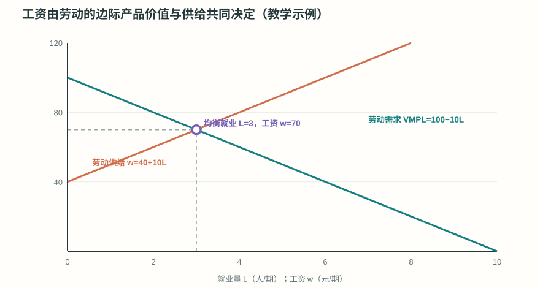
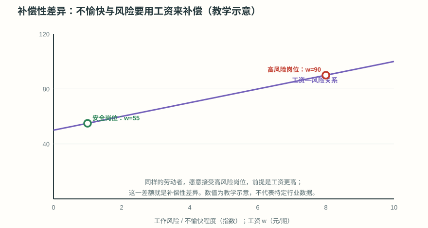

CHAPTER 23 · MICROECONOMICS
劳动市场与人力资本
工资由劳动的边际产品价值与供给共同决定：用同一组方程推导均衡工资，并理解人力资本、补偿性差异与技能溢价。
工资从哪里来
工资既不是雇主随口定的，也不完全由劳动者单方决定。在竞争性劳动市场上，它由两件事共同决定：企业愿意为一名工人支付的边际产品价值 VMPL（多雇一人带来的收入），以及劳动者愿意提供劳动的供给。
劳动需求与供给
企业会雇佣到边际产品价值等于工资为止（VMPL=w），这给出向下倾斜的劳动需求；劳动者在工资更高时愿意多工作，给出向上倾斜的劳动供给。两者相交决定均衡工资与就业。
教学示例：劳动需求 w=100−10L，劳动供给 w=40+10L。令两者相等：
均衡时 L=3、w=70，且 w=VMPL=100−30=70，符合“雇佣到边际产品价值等于工资”的原则。

要分清：沿劳动需求曲线移动（工资变化引起的雇佣量变化）与需求整体移动（生产率或产品价格变化）是两回事。
人力资本与补偿性差异
人力资本 human capital指劳动者通过教育、培训与经验积累起来的技能。它提高 VMPL，从而提高工资——在图 1 中表现为劳动需求整体上移。投资人力资本需要付出学费与时间（机会成本），只有预期收益足够高时才值得。
工资差异也不全来自技能。补偿性差异 compensating differentials指为补偿工作条件差、风险高或地点不便而支付的额外工资。同样的劳动者，愿意接受高风险岗位的前提是工资更高。这解释了为何脏、累、危险的岗位需要更高报酬，也提醒我们：比较工资时不能忽略工作条件。

超级明星与技能溢价
在歌唱、体育、软件等领域，顶尖从业者收入极高，普通从业者相差悬殊，这就是超级明星经济 superstar economy。它通常需要两个条件：产品能以极低成本大规模复制（一场演出可被无数人同时消费），以及消费者认为顶尖者明显更好、彼此难以替代。
此外，技术进步常带来技能溢价 skill premium：当新技术与高技能互补时，高技能者的工资上升更快。人力资本理论提醒，教育与培训的回报会随技术变化而调整，并非固定不变。
交互实验：生产率与工资
劳动需求上移
把劳动供给固定为 w=40+10L，拖动滑块改变生产率参数 A（使劳动需求为 VMPL=A−10L），观察均衡就业与工资如何变化。
生产率参数 A=100：劳动需求 VMPL=100−10L，均衡就业 L=3，工资 w=70；对应正文的教学示例。
均衡就业 L=(A−40)/20，工资 w=(A+40)/2；A=100 对应正文示例，不使用随机值。
A 从 100 升到 140 时，就业和工资各变化多少？这对“技术进步会取代工人”的说法有什么启示？
查看答案
A=140 时 L=(140−40)/20=5，w=(140+40)/2=90；就业从 3 升到 5、工资从 70 升到 90。说明当技术提高劳动的边际产品价值（与劳动互补）时，就业与工资可以同时上升；但若技术更多地替代劳动，需求会下移，结论就相反。
引用文献与适用范围
本章数值（劳动需求 100−10L、供给 40+10L、均衡 L=3、w=70）均为教学示例，不是观测数据；劳动市场的概念参考以下教材：
- OpenStax · Principles of Microeconomics 3e, Ch. 4: Labor and Financial Markets
- OpenStax · Principles of Microeconomics 3e（教材首页）
本章未引用具体行业或地区的工资统计，以免不可核验或过时；补偿性差异图为教学示意而非实测数据。人力资本、超级明星经济、技能溢价均为经济学常见概念，本章以文字概述，不作定量推论。